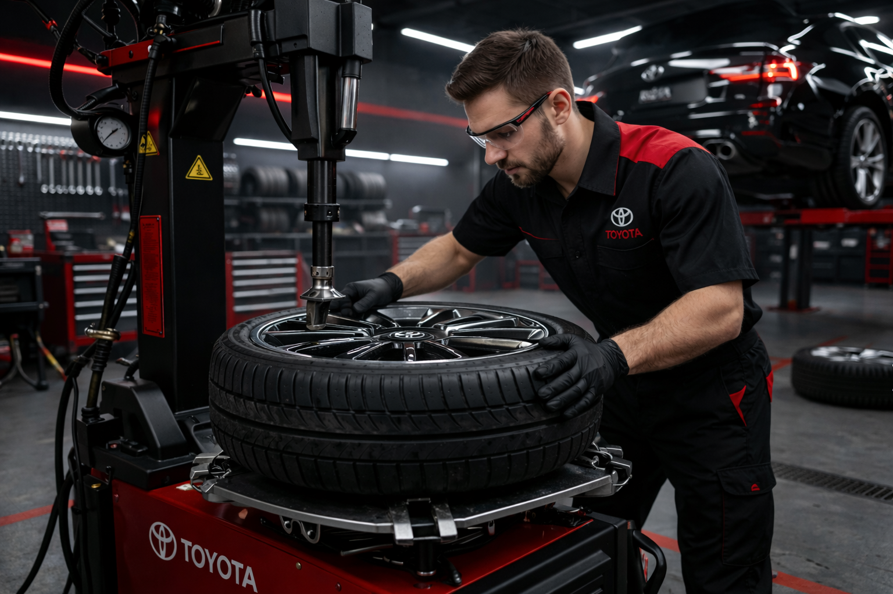

Профессиональный шиномонтаж для Toyota: сезонная смена колес, балансировка, проверка состояния шин и аккуратная установка с соблюдением всех требований безопасности.
Проводим полный комплекс шиномонтажных работ для автомобилей Toyota. Аккуратно меняем шины и колеса, выполняем балансировку, проверяем состояние резины и обеспечиваем комфортную и безопасную эксплуатацию автомобиля.

Среднее время шиномонтажа зависит от диаметра колес и объема работ.
Стоимость рассчитывается по размеру колес и выбранному комплексу услуг.